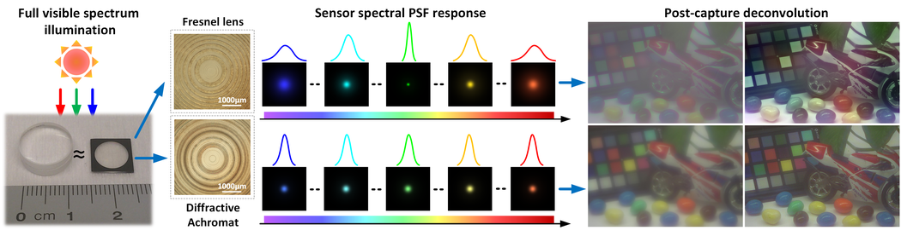

The Diffractive Achromat:
Full Spectrum Computational Imaging with Diffractive Optics
Y. Peng,
Q. Fu,
F. Heide,
W. Heidrich
Siggraph 2016

The diffractive achromat is a computationally optimized diffractive
lens for full visible spectrum imaging, which is used jointly with a
computational image reconstruction algorithm. The microscope images
show a traditional Fresnel diffraction grating (top) and our
diffractive achromat (bottom). In full visible spectrum illumination,
the former can only be focused only at one specific wavelength
(e.g. green here) while all other wavelengths are out of focus. This
results in highly nonuniform spatial and spectral response (color
PSFs) on the image plane coupled with Bayer filters (top middle). In
particular, metamerism introduces a data dependency in the PSF shape
for any kind of broadband image sensor. Our diffractive achromat is
optimized to equalize the spectral focusing performance within the
whole visible spectrum. Consequently, the PSFs for all wavelengths are
nearly identical to each other (bottom middle). The captured blurry
image shows much higher color fidelity than the conventional
diffractive lens (right). Our diffractive achromat is much thinner and
lighter than an refractive achromatic lens with the same optical power
(left-most bottom).
Abstract
Diffractive optical elements (DOEs) have recently drawn great attention in computational imaging because they can drastically reduce the size and weight of imaging devices compared to their refractive counterparts. However, the inherent strong dispersion is a tremendous obstacle that limits the use of DOEs in full spectrum imaging, causing unacceptable loss of color fidelity in the images. In particular, metamerism introduces a data dependency in the image blur, which has been neglected in computational imaging methods so far. We introduce both a diffractive achromat based on computational optimization, as well as a corresponding algorithm for correction of residual aberrations. Using this approach, we demonstrate high fidelity color diffractive-only imaging over the full visible spectrum. In the optical design, the height profile of a diffractive lens is optimized to balance the focusing contributions of different wavelengths for a specific focal length. The spectral point spread functions (PSFs) become nearly identical to each other, creating approximately spectrally invariant blur kernels. This property guarantees good color preservation in the captured image and facilitates the correction of residual aberrations in our fast two-step deconvolution without additional color priors. We demonstrate our design of diffractive achromat on a 0.5mm ultrathin substrate by photolithography techniques. Experimental results show that our achromatic diffractive lens produces high color fidelity and better image quality in the full visible spectrum.
Links